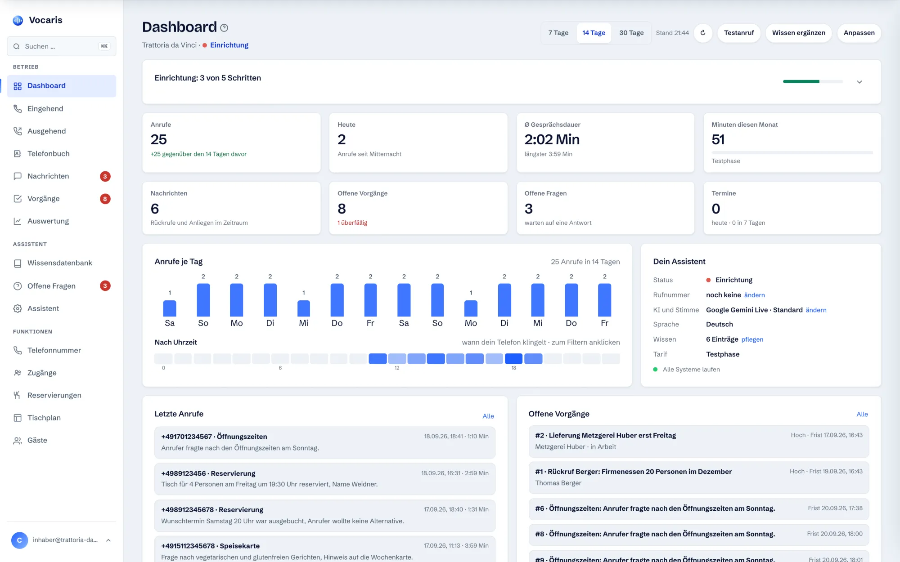
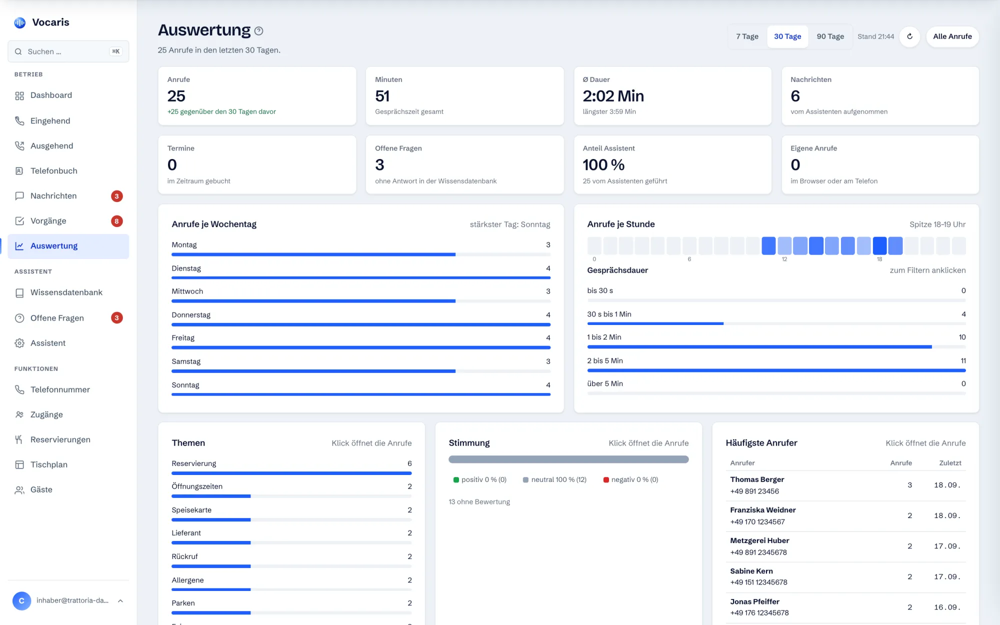
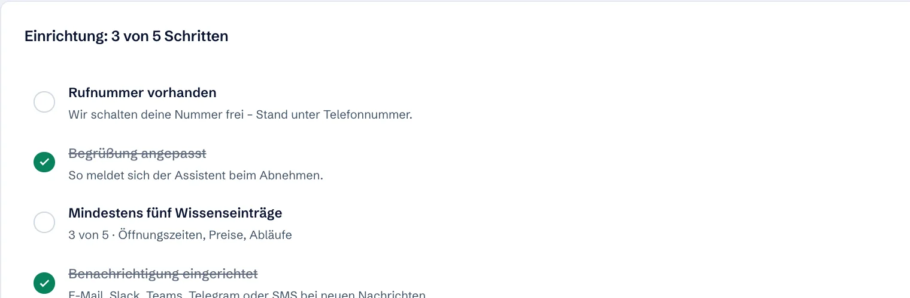
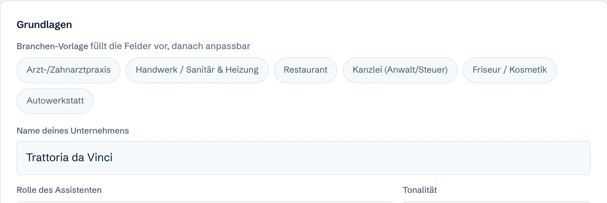
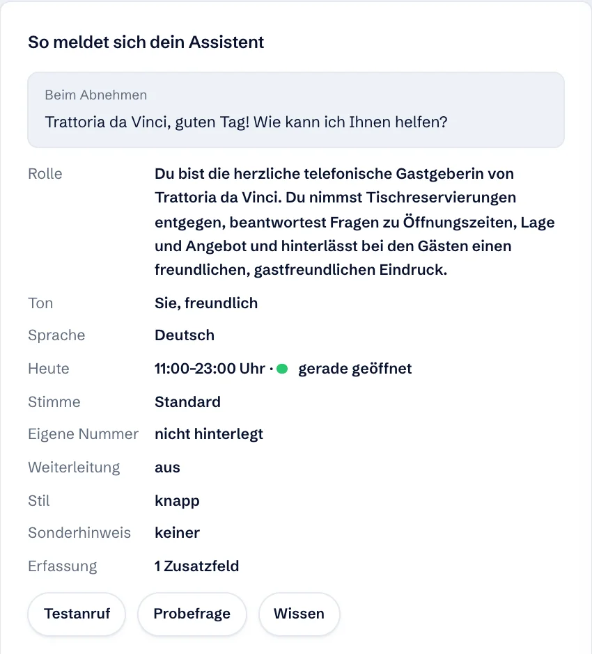
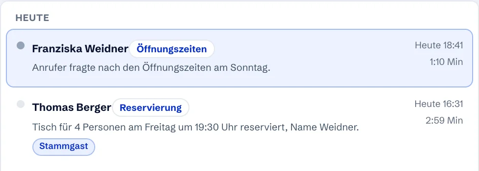

Geht ran, wenn Sie nicht können.
Vocaris nimmt jeden Anruf an, bucht Termine, nimmt Rückrufe auf und leitet Notfälle weiter. Mit natürlicher Stimme, rund um die Uhr. Sie lesen danach in Ruhe, was besprochen wurde.
Guten Tag, ich hätte gern einen Termin zur Kontrolle.
0:02 · AnruferGuten Tag! Sehr gerne. Diese Woche hätte ich Donnerstag um 14:30 Uhr frei. Würde Ihnen das passen?
0:04 · VocarisDonnerstag ist schlecht. Geht auch Freitag?
0:09 · AnruferNatürlich. Am Freitag habe ich um 10 Uhr oder um 16 Uhr etwas frei.
0:11 · VocarisZehn Uhr passt.
0:15 · AnruferWunderbar, dann trage ich Sie für Freitag um 10 Uhr ein. Sie bekommen gleich eine Bestätigung per SMS.
0:17 · Vocaris- In 15 Minuten eingerichtet
- Bestehende Nummer bleibt
- Ab 49 € im Monat, monatlich kündbar
So klingt es, wenn Vocaris einen Termin vergibt.
Drei Sätze aus einem echten Gespräch in einer Arztpraxis, aufgenommen im Produkt, nicht nachgesprochen. Vocaris prüft den Kalender, schlägt Alternativen vor und bestätigt per SMS.
Aufnahme aus dem Produkt. Stimme und Sprachmodell wählen Sie im Kundenbereich, fünf Anbieter stehen zur Wahl.
Alles im Browser. Jedes Gespräch nachlesbar.
Echte Ansichten aus dem Kundenbereich, kein Entwurf. Sie sehen jeden Anruf mit Zusammenfassung und Transkript, richten den Assistenten ein und behalten die Zahlen im Blick.





Der Tag auf einen Blick
- Anrufe je Tag und Uhrzeit, mit Vergleich zum Zeitraum davor
- Nachrichten, offene Vorgänge und offene Fragen als Zähler
- Einrichtung als Checkliste, Testanruf mit einem Klick
Jeder Anruf, zusammengefasst
- Thema, Stimmung und Dauer, Transkript zum Nachlesen
- Zurückrufen, Vorgang anlegen oder Nummer sperren, ein Klick
- Laufende Gespräche erscheinen in Echtzeit
Wann Ihr Telefon klingelt
- Anrufe je Wochentag und Stunde, Gesprächsdauer
- Themen und Stimmung, Klick öffnet die Anrufe dahinter
- Häufigste Anrufer mit Nummer
So spricht Ihr Assistent
- Branchen-Vorlage füllt Rolle und Begrüßung vor
- Tonalität, Öffnungszeiten, Stimme und Sprache einstellen
- Probefrage und Testanruf direkt aus der Ansicht
Unterwegs genauso
- Gleicher Kundenbereich, ohne App-Installation
- Leiste unten für Dashboard, Eingehend, Nachrichten, Vorgänge
- Selbst anrufen oder zurückrufen, direkt vom Handy
Was kostet ein Anruf, den niemand annimmt?
Stellen Sie ein, wie es bei Ihnen aussieht. Die Voreinstellungen sind ein Beispiel, kein Branchendurchschnitt.
Der Tarif Klein kostet weniger als ein Prozent des Umsatzes, der hier verloren geht.
Rechnung: Anrufe pro Tag × 22 Arbeitstage × Anteil verpasst × Abschlussquote × Auftragswert. Nettopreise, Minuten über dem Tarif kommen dazu. Alle Tarife und der Preisrechner
In vier Schritten live. Komplett im Browser.
Kein IT-Projekt, keine Installation. Die Ausschnitte stammen aus dem Kundenbereich.
-
Nummer anlegen oder portieren
Wir schalten eine neue Rufnummer frei oder Sie leiten Ihre bestehende Nummer weiter, dauerhaft oder nur, wenn niemand abnimmt. Ihre Nummer bleibt Ihre Nummer.

-
Assistenten einrichten
Branchen-Vorlage wählen, Name und Begrüßung anpassen, Öffnungszeiten und Stimme festlegen. Wissen lesen Sie von Ihrer Website oder aus einem PDF ein.

-
Testanruf machen
Ein Klick, Ihr Telefon klingelt, Sie sprechen mit Ihrem eigenen Assistenten. Was nicht passt, ändern Sie sofort. Änderungen wirken beim nächsten Anruf.

-
Live: Vocaris übernimmt
Jeder Anruf erscheint mit Zusammenfassung, Thema und Transkript. Sie bekommen eine E-Mail nach jedem Gespräch, bei Dringendem eine SMS.

Kennt die Regeln Ihres Betriebs.
Ob Reservierung, Rezeptwunsch oder Schadenmeldung: Jede Branche hat eine eigene Seite mit Beispielen und Grenzen. Ein typischer Satz je Kachel zeigt, wie der Assistent dort spricht.
Für vier Personen um 19:30 Uhr habe ich noch einen Tisch. Auf welchen Namen darf ich reservieren?Mehr für Restaurants → Arztpraxen
Zur Kontrolle hätte ich Donnerstag um 14:30 Uhr oder Freitag um 10 Uhr frei.Mehr für Praxen → Handwerk & Bau
Tropft das Wasser gerade aktiv? Dann gebe ich das sofort an die Bereitschaft weiter.Mehr für Handwerk → Kfz & Autowerkstatt
Für den TÜV-Termin brauche ich noch das Kennzeichen, dann trage ich Sie für Dienstag ein.Mehr für Werkstätten → Friseur & Salon
Schnitt und Farbe dauern etwa zwei Stunden. Samstag um 11 Uhr wäre noch frei.Mehr für Salons → Kanzleien
Ich notiere Ihr Anliegen vertraulich. Frau Berger ruft Sie heute Nachmittag zurück.Mehr für Kanzleien → Hotellerie
Frühstück gibt es von 7 bis 10:30 Uhr. Soll ich Ihre Anfrage für zwei Nächte an die Rezeption geben?Mehr für Hotels → Hausverwaltung
Wasserschaden in der Hauptstraße 3, verstanden. Ich verbinde Sie sofort mit dem Notdienst.Mehr für Verwaltungen → Immobilien
Die Wohnung in der Leopoldstraße ist noch frei. Passt Ihnen eine Besichtigung am Donnerstag um 17 Uhr?Mehr für Makler → Ambulante Pflege
Ich gebe die geänderte Zeit an die Pflegedienstleitung weiter. Sie meldet sich bis 12 Uhr bei Ihnen.Mehr für Pflegedienste → Apotheke
Das Medikament ist morgen ab 9 Uhr abholbereit. Soll ich es auf Ihren Namen zurücklegen?Mehr für Apotheken → Versicherung
Ich nehme die Schadenmeldung auf. Wann ist es passiert, und wurde jemand verletzt?Mehr für Makler → Software & SaaS
Ich habe einen Vorgang mit hoher Priorität angelegt. Ein Kollege meldet sich innerhalb einer Stunde.Mehr für Softwareanbieter → Onlinehandel
Rücksendungen sind 30 Tage lang möglich. Ich schicke Ihnen das Rücksendeetikett per E-Mail.Mehr für Onlineshops → Physiotherapie
Für die sechs Termine Ihres Rezepts habe ich dienstags und donnerstags um 8 Uhr frei.Mehr für Physiotherapie → Tierarztpraxis
Frisst und trinkt Ihr Hund noch? Dann nehme ich Sie heute um 16 Uhr dazwischen.Mehr für Tierarztpraxen → Fitness & Studio
Das Probetraining ist kostenlos. Morgen um 18 Uhr hätte ein Trainer Zeit für Sie.Mehr für Fitnessstudios → Alle 17 BranchenMit Beispielgesprächen, Regeln und Grenzen je Branche.Zur Übersicht →
Europäisch gedacht. In der EU gehostet.
Ihre Gespräche bleiben in der EU. Auf Wunsch führt ein rein europäisches Sprachmodell Ihre Anrufe, ohne Umweg über Drittstaaten.
DSGVO-konform
Verarbeitung und Hosting in der EU, Auftragsverarbeitungsvertrag inklusive, Rollen- und Rechtemodell für den Zugriff. Die Aufbewahrungsfrist stellen Sie selbst ein.
Ausfallsicher
Fällt ein Sprachmodell aus, springt automatisch ein anderes ein. Bei einer Störung hört der Anrufer eine Ansage statt eines Freizeichens.
Jedes Gespräch einsehbar
Transkript und Zusammenfassung zu jedem Anruf, Kosten pro Gespräch, Störer mit einem Klick gesperrt. Sie behalten die Kontrolle über jede Antwort.
Kurz beantwortet.
Klingt Vocaris wie ein Mensch?
Bleibt meine bestehende Rufnummer erhalten?
Wie schnell bin ich startklar?
Was passiert bei Fragen, die Vocaris nicht kennt?
Wo werden meine Gespräche verarbeitet?
In wenigen Sekunden klingelt Ihr Telefon.
Rufnummer eintragen, Vocaris ruft Sie an, und Sie hören selbst, wie ein Gespräch klingt. Kostenlos, unverbindlich, ohne Anmeldung.
Alle Systeme laufen